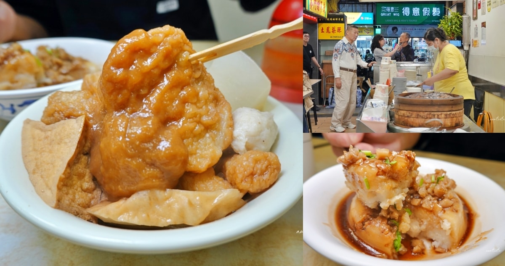

水晶安蹄｜西門町賽門甜不辣：1958 年創立老店，甜不辣與碗粿口袋名單

一句話摘要
賽門甜不辣是西門町西寧南路上的老字號小吃店，原文記錄其創立於 1958 年、店內標示「絕無分店」；適合收進「西門町看電影／逛街後的老店小吃」口袋名單，招牌是甜不辣，另可試碗粿、肉粽、湯品與豆花類甜品。
來源重點
- 來源文章：水晶安蹄 不務正業過生活〈【台北】西門町｜賽門甜不辣，1958年創立甜不辣老店，碗粿意外好吃〉。
- 發布時間：2026-06-19。
- 原文主張：賽門甜不辣創立於 1958 年，位於西門町西寧南路，店內清楚標示絕無分店。
- 原文體驗：甜不辣口感有彈性、魚漿香氣明顯，醬料甜鹹夠味；碗粿口感細緻、菜脯鹹香有層次；雞蛋布丁偏古早味但甜度較高。
店家資訊
| 項目 | 內容 |
|---|---|
| 店名 | 賽門甜不辣 |
| 地址 | 108 台北市萬華區西寧南路 95 號 |
| 電話 | 02-2331-2481 |
| 營業時間 | 10:45–22:00（原文與第三方美食站資料一致；仍以現場/Google Maps 即時狀態為準） |
| 區域 | 西門町，原文估捷運西門站步行約 6–7 分鐘 |
| Google 評分參考 | 原文擷取時為 3.9、約 1,540 則評論；分數會隨時間變動 |
餐點筆記
- 甜不辣：原文點大碗；價格記錄為小碗 70 元、大碗 80 元。特色是口感不軟爛、保有彈性，醬料走甜鹹路線，可加辣增加香氣。
- 碗粿：原文評為意外加分，口感細緻、不過硬也不過黏，菜脯鹹香讓味道更有層次。
- 雞蛋布丁：滑嫩、古早味，但原文覺得焦糖與布丁甜度偏高。
- 其他品項：肉粽、湯品、豆花等甜品；菜單與價格仍需以現場為準。
- 經典吃法：甜不辣吃完後可用剩下醬料加湯收尾；原文這次因趕時間未實際留下喝湯。
欒帥可用的收藏方式
這筆適合收在「生活資料／台北美食／西門町」：
- 場景：西門町看電影、逛街、帶外地朋友吃台式老店小吃。
- 路線：西門站 → 西寧南路 → 賽門甜不辣，可再串萬年大樓、西門紅樓、成都路周邊小吃。
- 必點候選：甜不辣、碗粿；若喜歡古早味甜點再試雞蛋布丁。
- 注意：文章特別提到「賽門甜不辣」與百貨公司吃到的「賽門鄧普拉」並非同一家；本店標示絕無分店。
查核與限制
- DuckDuckGo 搜尋結果與第三方美食站（如米寶麻、OpenRice/Yelp 摘要）同樣指向西寧南路 95 號與 02-2331-2481，營業時間多列 10:45–22:00。
- OpenStreetMap/Nominatim 查詢未找到此 POI；本文不以 OSM 作地址佐證。
- 本次未登入 Google Maps 檢查即時營業狀態；評分、價格、菜單與公休日可能變動。
- 旅遊/美食部落格屬個人體驗，口味評價主觀；本文用途是口袋名單整理，不代表排名或保證。
來源
- 水晶安蹄原文：https://auntie.tw/%e8%b3%bd%e9%96%80%e7%94%9c%e4%b8%8d%e8%be%a3/
- DuckDuckGo 搜尋摘要：賽門甜不辣 西寧南路95號 02 2331 2481；賽門甜不辣 營業時間。
- 參考交叉查核：米寶麻、OpenRice/Yelp 搜尋摘要。